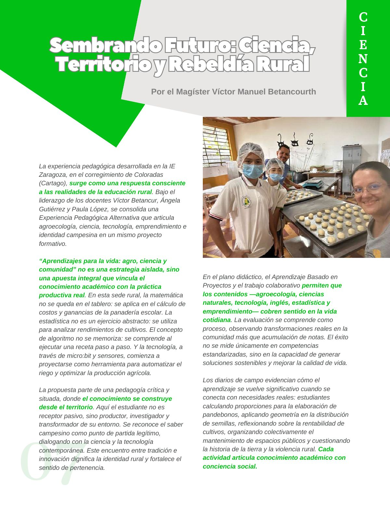
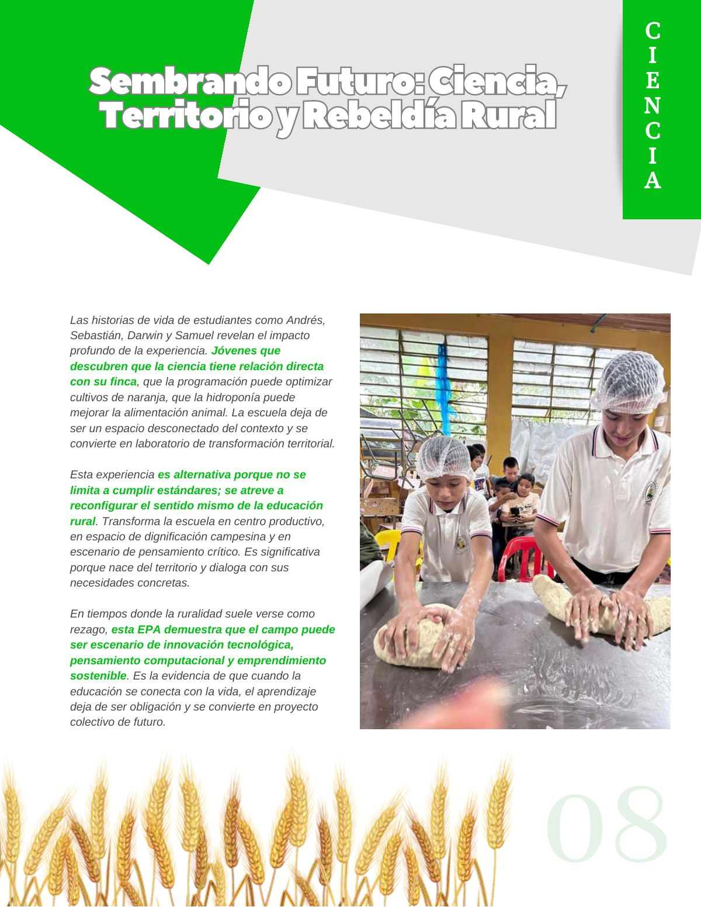

Sembrando futuro: ciencia, territorio y rebeldía rural
Cómo una escuela rural transforma el aprendizaje al integrar agro, ciencia y tecnología para dignificar el territorio y proyectar futuro.
PDF · 2 págs. · 312 KBLa experiencia pedagógica desarrollada en la IE Zaragoza, en el corregimiento de Coloradas (Cartago), surge como una respuesta consciente a las realidades de la educación rural. Bajo el liderazgo de los docentes Víctor Betancur, Ángela Gutiérrez y Paula López, se consolida una Experiencia Pedagógica Alternativa que articula agroecología, ciencia, tecnología, emprendimiento e identidad campesina en un mismo proyecto formativo.
“Aprendizajes para la vida: agro, ciencia y comunidad” no es una estrategia aislada, sino una apuesta integral que vincula el conocimiento académico con la práctica productiva real. En esta sede rural, la matemática no se queda en el tablero: se aplica en el cálculo de costos y ganancias de la panadería escolar. La estadística no es un ejercicio abstracto: se utiliza para analizar rendimientos de cultivos. El concepto de algoritmo no se memoriza: se comprende al ejecutar una receta paso a paso. Y la tecnología, a través de micro:bit y sensores, comienza a proyectarse como herramienta para automatizar el riego y optimizar la producción agrícola.
La propuesta parte de una pedagogía crítica y situada, donde el conocimiento se construye desde el territorio. Aquí el estudiante no es receptor pasivo, sino productor, investigador y transformador de su entorno. Se reconoce el saber campesino como punto de partida legítimo, dialogando con la ciencia y la tecnología contemporánea. Este encuentro entre tradición e innovación dignifica la identidad rural y fortalece el sentido de pertenencia.
En el plano didáctico, el Aprendizaje Basado en Proyectos y el trabajo colaborativo permiten que los contenidos —agroecología, ciencias naturales, tecnología, inglés, estadística y emprendimiento— cobren sentido en la vida cotidiana. La evaluación se comprende como proceso, observando transformaciones reales en la comunidad más que acumulación de notas. El éxito no se mide únicamente en competencias estandarizadas, sino en la capacidad de generar soluciones sostenibles y mejorar la calidad de vida.
Los diarios de campo evidencian cómo el aprendizaje se vuelve significativo cuando se conecta con necesidades reales: estudiantes calculando proporciones para la elaboración de pandebonos, aplicando geometría en la distribución de semillas, reflexionando sobre la rentabilidad de cultivos, organizando colectivamente el mantenimiento de espacios públicos y cuestionando la historia de la tierra y la violencia rural. Cada actividad articula conocimiento académico con conciencia social.
Las historias de vida de estudiantes como Andrés, Sebastián, Darwin y Samuel revelan el impacto profundo de la experiencia. Jóvenes que descubren que la ciencia tiene relación directa con su finca, que la programación puede optimizar cultivos de naranja, que la hidroponía puede mejorar la alimentación animal. La escuela deja de ser un espacio desconectado del contexto y se convierte en laboratorio de transformación territorial.
Esta experiencia es alternativa porque no se limita a cumplir estándares; se atreve a reconfigurar el sentido mismo de la educación rural. Transforma la escuela en centro productivo, en espacio de dignificación campesina y en escenario de pensamiento crítico. Es significativa porque nace del territorio y dialoga con sus necesidades concretas.
En tiempos donde la ruralidad suele verse como rezago, esta EPA demuestra que el campo puede ser escenario de innovación tecnológica, pensamiento computacional y emprendimiento sostenible. Es la evidencia de que cuando la educación se conecta con la vida, el aprendizaje deja de ser obligación y se convierte en proyecto colectivo de futuro.
Así se ve en la revista
2 páginas
